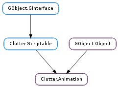

| static | new() |
| bind(property_name, final) | |
| bind_interval(property_name, interval) | |
| completed() | |
| get_alpha() | |
| get_duration() | |
| get_interval(property_name) | |
| get_loop() | |
| get_mode() | |
| get_object() | |
| get_timeline() | |
| has_property(property_name) | |
| set_alpha(alpha) | |
| set_duration(msecs) | |
| set_loop(loop) | |
| set_mode(mode) | |
| set_object(object) | |
| set_timeline(timeline) | |
| unbind_property(property_name) | |
| update(property_name, final) | |
| update_interval(property_name, interval) |
| Name | Type | Flags | Description |
|---|---|---|---|
| alpha | Clutter.Alpha | r/w | The alpha used by the animation |
| duration | int | r/w | Duration of the animation, in milliseconds |
| loop | bool | r/w | Whether the animation should loop |
| mode | int | r/w | The mode of the animation |
| object | GObject.Object | r/w | Object to which the animation applies |
| timeline | Clutter.Timeline | r/w | The timeline used by the animation |
| Name | Parameters | Return | Description |
|---|---|---|---|
| completed | The ::completed signal is emitted once the animation has been completed. The animation instance is guaranteed to be valid for the entire duration of the signal emission chain. | ||
| started | The ::started signal is emitted once the animation has been started |
| Name | Type | Access |
|---|---|---|
| parent_instance | GObject.Object | r |
Bases: GObject.Object, Clutter.Scriptable
The Clutter.Animation structure contains only private data and should be accessed using the provided functions.
| Returns: | the newly created Clutter.Animation. Use GObject.Object.unref () to release the associated resources |
|---|---|
| Return type: | Clutter.Animation |
Creates a new Clutter.Animation instance. You should set the GObject.Object to be animated using Clutter.Animation.set_object (), set the duration with Clutter.Animation.set_duration () and the easing mode using Clutter.Animation.set_mode ().
Use Clutter.Animation.bind () or Clutter.Animation.bind_interval () to define the properties to be animated. The interval and the animated properties can be updated at runtime.
The Clutter.Actor.animate () and relative family of functions provide an easy way to animate a Clutter.Actor and automatically manage the lifetime of a Clutter.Animation instance, so you should consider using those functions instead of manually creating an animation.
| Parameters: |
|
|---|---|
| Returns: | The animation itself. |
| Return type: |
Adds a single property with name property_name to the animation animation. For more information about animations, see Clutter.Actor.animate ().
This method returns the animation primarily to make chained calls convenient in language bindings.
| Parameters: |
|
|---|---|
| Returns: | The animation itself. |
| Return type: |
Binds interval to the property_name of the GObject.Object attached to animation. The Clutter.Animation will take ownership of the passed Clutter.Interval. For more information about animations, see Clutter.Actor.animate ().
If you need to update the interval instance use Clutter.Animation.update_interval () instead.
The ::completed signal is emitted once the animation has been completed.
The animation instance is guaranteed to be valid for the entire duration of the signal emission chain.
| Returns: | the alpha object used by the animation |
|---|---|
| Return type: | Clutter.Alpha |
Retrieves the Clutter.Alpha used by animation.
| Returns: | the duration of the animation |
|---|---|
| Return type: | int |
Retrieves the duration of animation, in milliseconds.
| Parameters: | property_name (str) – name of the property |
|---|---|
| Returns: | a Clutter.Interval or None if no property with the same name was found. The returned interval is owned by the Clutter.Animation and should not be unreferenced |
| Return type: | Clutter.Interval |
Retrieves the Clutter.Interval associated to property_name inside animation.
| Returns: | True if the animation is looping |
|---|---|
| Return type: | bool |
Retrieves whether animation is looping.
| Returns: | the mode for the animation |
|---|---|
| Return type: | int |
Retrieves the animation mode of animation, as set by Clutter.Animation.set_mode ().
| Returns: | a GObject.Object |
|---|---|
| Return type: | GObject.Object |
Retrieves the GObject.Object attached to animation.
| Returns: | the timeline used by the animation |
|---|---|
| Return type: | Clutter.Timeline |
Retrieves the Clutter.Timeline used by animation
| Parameters: | property_name (str) – name of the property |
|---|---|
| Returns: | True if the property is animated by the Clutter.Animation, False otherwise |
| Return type: | bool |
Checks whether animation is controlling property_name.
| Parameters: | alpha (Clutter.Alpha) – a Clutter.Alpha, or None to unset the current Clutter.Alpha |
|---|
Sets alpha as the Clutter.Alpha used by animation.
If alpha is not None, the Clutter.Animation will take ownership of the Clutter.Alpha instance.
| Parameters: | msecs (int) – the duration in milliseconds |
|---|
Sets the duration of animation in milliseconds.
This function will set Clutter.Animation :alpha and Clutter.Animation :timeline if needed.
| Parameters: | loop (bool) – True if the animation should loop |
|---|
Sets whether animation should loop over itself once finished.
A looping Clutter.Animation will not emit the Clutter.Animation ::completed signal when finished.
This function will set Clutter.Animation :alpha and Clutter.Animation :timeline if needed.
| Parameters: | mode (int) – an animation mode logical id |
|---|
Sets the animation mode of animation. The animation mode is a logical id, either coming from the Clutter.AnimationMode enumeration or the return value of Clutter.Alpha.register_func ().
This function will also set Clutter.Animation :alpha if needed.
| Parameters: | object (GObject.Object) – a GObject.Object |
|---|
Attaches animation to object. The Clutter.Animation will take a reference on object.
| Parameters: | timeline (Clutter.Timeline or None) – a Clutter.Timeline, or None to unset the current Clutter.Timeline |
|---|
Sets the Clutter.Timeline used by animation.
This function will take a reference on the passed timeline.
| Parameters: | property_name (str) – name of the property |
|---|
Removes property_name from the list of animated properties.
| Parameters: |
|
|---|---|
| Returns: | The animation itself. |
| Return type: |
Updates the final value of the interval for property_name
| Parameters: |
|
|---|
Changes the interval for property_name. The Clutter.Animation will take ownership of the passed Clutter.Interval.